4 Inspecting the MultiDataSet object
In this chapter, we will show how to inspect the MultiDataSet object that we created in Chapter 3 and how to extract information from it.
As a reminder, here is what the _targets.R script should look like so far:
_targets.R script
library(targets)
library(tarchetypes)
library(moiraine)
tar_option_set(
packages = c(
"moiraine",
"MOFA2",
"mixOmics",
"readr",
"tibble",
"tidyr",
"dplyr",
"ggplot2",
"patchwork"
)
)
list(
# Importing data ---------------------------------------------------------------
## Data import using a target factory
import_dataset_csv_factory(
files = c(
system.file("extdata/genomics_dataset.csv", package = "moiraine"),
system.file("extdata/transcriptomics_dataset.csv", package = "moiraine"),
system.file("extdata/metabolomics_dataset.csv", package = "moiraine")
),
col_ids = c("marker", "gene_id", "sample_id"),
features_as_rowss = c(TRUE, TRUE, FALSE),
target_name_suffixes = c("geno", "transcripto", "metabo")
),
## Genomics features metadata file
tar_target(
fmetadata_file_geno,
system.file("extdata/genomics_features_info.csv", package = "moiraine"),
format = "file"
),
## Genomics features metadata import
tar_target(
fmetadata_geno,
import_fmetadata_csv(
fmetadata_file_geno,
col_id = "marker",
col_types = c("chromosome" = "c")
)
),
## Metabolomics features metadata import
import_fmetadata_csv_factory(
files = c(
system.file("extdata/metabolomics_features_info.csv", package = "moiraine")
),
col_ids = c("feature_id"),
target_name_suffixes = c("metabo")
),
## Transcriptomics features metadata import
import_fmetadata_gff_factory(
files = system.file("extdata/bos_taurus_gene_model.gff3", package = "moiraine"),
feature_types = "genes",
add_fieldss = c("Name", "description"),
target_name_suffixes = "transcripto"
),
## Samples metadata import
import_smetadata_csv_factory(
files = system.file("extdata/samples_info.csv", package = "moiraine"),
col_ids = "animal_id",
target_name_suffixes = "all"
),
## Creating omics sets for each dataset
create_omics_set_factory(
datasets = c(data_geno, data_transcripto, data_metabo),
omics_types = c("genomics", "transcriptomics", "metabolomics"),
features_metadatas = c(fmetadata_geno, fmetadata_transcripto, fmetadata_metabo),
samples_metadatas = c(smetadata_all, smetadata_all, smetadata_all)
),
## Creating the MultiDataSet object
tar_target(
mo_set,
create_multiomics_set(
list(set_geno,
set_transcripto,
set_metabo)
)
)
)At this stage, our different omics datasets (and associated metadata) are stored in a MultiDataSet object, saved in the target called mo_set:
tar_load(mo_set)
mo_set
#> Object of class 'MultiDataSet'
#> . assayData: 3 elements
#> . snps: 23036 features, 139 samples
#> . rnaseq: 20335 features, 143 samples
#> . metabolome: 55 features, 139 samples
#> . featureData:
#> . snps: 23036 rows, 13 cols (feature_id, ..., p_value)
#> . rnaseq: 20335 rows, 8 cols (feature_id, ..., Name)
#> . metabolome: 55 rows, 16 cols (feature_id, ..., de_signif)
#> . rowRanges:
#> . snps: YES
#> . rnaseq: YES
#> . metabolome: NO
#> . phenoData:
#> . snps: 139 samples, 10 cols (id, ..., geno_comp_3)
#> . rnaseq: 143 samples, 10 cols (id, ..., geno_comp_3)
#> . metabolome: 139 samples, 10 cols (id, ..., geno_comp_3)4.1 Querying datasets names and dimensions
The names of the omics datasets stored in a MultiDataSet object can be obtained with:
names(mo_set)
#> [1] "snps" "rnaseq" "metabolome"It is also possible to query the number of features and samples in each dataset via n_features() and n_samples(). Both functions return a named integer vector:
n_features(mo_set)
#> snps rnaseq metabolome
#> 23036 20335 55n_samples(mo_set)
#> snps rnaseq metabolome
#> 139 143 139The feature and sample IDs for each dataset can be extracted with the get_features() and get_samples() functions. Both functions return a named list of features or samples ID for each omics dataset:
get_features(mo_set) |> str()
#> List of 3
#> $ snps : chr [1:23036] "1_41768691" "10-27008241-A-C-rs42918694" "10-37505419-T-C-rs136559242" "10-49904259-G-A-rs471723345" ...
#> $ rnaseq : chr [1:20335] "ENSBTAG00000000005" "ENSBTAG00000000008" "ENSBTAG00000000009" "ENSBTAG00000000010" ...
#> $ metabolome: chr [1:55] "HMDB00001" "HMDB00008" "HMDB00042" "HMDB00043" ...get_samples(mo_set) |> str()
#> List of 3
#> $ snps : chr [1:139] "R21" "Y3660" "Y3243" "R5764" ...
#> $ rnaseq : chr [1:143] "R9497" "R5969" "R5327" "R5979" ...
#> $ metabolome: chr [1:139] "R21" "Y3660" "Y3243" "R5764" ...4.2 Extracting datasets and metadata
We can extract the dataset matrices from a MultiDataSet object with the get_datasets() function, which returns a named list of matrices, each with features as rows and samples as columns:
get_datasets(mo_set) |> str()
#> List of 3
#> $ snps : num [1:23036, 1:139] 1 2 0 1 2 0 1 2 1 1 ...
#> ..- attr(*, "dimnames")=List of 2
#> .. ..$ : chr [1:23036] "1_41768691" "10-27008241-A-C-rs42918694" "10-37505419-T-C-rs136559242" "10-49904259-G-A-rs471723345" ...
#> .. ..$ : chr [1:139] "R21" "Y3660" "Y3243" "R5764" ...
#> $ rnaseq : num [1:20335, 1:143] 733 6 0 2693 0 ...
#> ..- attr(*, "dimnames")=List of 2
#> .. ..$ : chr [1:20335] "ENSBTAG00000000005" "ENSBTAG00000000008" "ENSBTAG00000000009" "ENSBTAG00000000010" ...
#> .. ..$ : chr [1:143] "R9497" "R5969" "R5327" "R5979" ...
#> $ metabolome: num [1:55, 1:139] 9.1 58.2 403 172.6 0.7 ...
#> ..- attr(*, "dimnames")=List of 2
#> .. ..$ : chr [1:55] "HMDB00001" "HMDB00008" "HMDB00042" "HMDB00043" ...
#> .. ..$ : chr [1:139] "R21" "Y3660" "Y3243" "R5764" ...get_datasets(mo_set)[["snps"]][1:5, 1:5]
#> R21 Y3660 Y3243 R5764 P4669
#> 1_41768691 1 0 2 2 1
#> 10-27008241-A-C-rs42918694 2 2 2 1 2
#> 10-37505419-T-C-rs136559242 0 1 0 2 0
#> 10-49904259-G-A-rs471723345 1 2 2 2 2
#> 1-109550832-G-A-rs209732846 2 2 1 2 2To obtain the matrix for a single dataset from the MultiDataSet object, the get_dataset_matrix() function can be used instead:
get_dataset_matrix(mo_set, "snps")[1:5, 1:5]
#> R21 Y3660 Y3243 R5764 P4669
#> 1_41768691 1 0 2 2 1
#> 10-27008241-A-C-rs42918694 2 2 2 1 2
#> 10-37505419-T-C-rs136559242 0 1 0 2 0
#> 10-49904259-G-A-rs471723345 1 2 2 2 2
#> 1-109550832-G-A-rs209732846 2 2 1 2 2Similarly, the functions get_features_metadata() and get_samples_metadata() each return a named list of feature or sample metadata data-frames, one per omics dataset:
get_features_metadata(mo_set) |> str()
#> List of 3
#> $ snps :'data.frame': 23036 obs. of 13 variables:
#> ..$ feature_id : chr [1:23036] "1_41768691" "10-27008241-A-C-rs42918694" "10-37505419-T-C-rs136559242" "10-49904259-G-A-rs471723345" ...
#> ..$ chromosome : chr [1:23036] "1" "10" "10" "0" ...
#> ..$ position : num [1:23036] 4.21e+07 2.70e+07 3.74e+07 0.00 1.09e+08 ...
#> ..$ gen_train_score: num [1:23036] 0.679 0.805 0.789 0.797 0.891 ...
#> ..$ ref : chr [1:23036] "T" "A" "A" "A" ...
#> ..$ alt : chr [1:23036] "G" "C" "G" "G" ...
#> ..$ ilmn_strand : chr [1:23036] "BOT" "TOP" "TOP" "TOP" ...
#> ..$ customer_strand: chr [1:23036] "BOT" "TOP" "BOT" "TOP" ...
#> ..$ norm_id : num [1:23036] 2 1 1 2 3 1 3 3 0 0 ...
#> ..$ qtl_type : chr [1:23036] "non signif." "non signif." "non signif." "non signif." ...
#> ..$ qtl_effect : num [1:23036] NA NA NA NA NA NA NA NA NA NA ...
#> ..$ p_value : num [1:23036] NA NA NA NA NA NA NA NA NA NA ...
#> ..$ fdr : num [1:23036] NA NA NA NA NA NA NA NA NA NA ...
#> $ rnaseq :'data.frame': 20335 obs. of 8 variables:
#> ..$ feature_id : chr [1:20335] "ENSBTAG00000000005" "ENSBTAG00000000008" "ENSBTAG00000000009" "ENSBTAG00000000010" ...
#> ..$ chromosome : Factor w/ 178 levels "1","2","3","4",..: 17 29 18 21 8 20 20 5 5 23 ...
#> ..$ start : int [1:20335] 65389743 32214439 12338037 34209956 7950815 33708626 33674806 74883636 74905031 27720176 ...
#> ..$ end : int [1:20335] 65505336 32244810 12342272 34223394 7971600 33732944 33703223 74893752 74919112 27721739 ...
#> ..$ width : int [1:20335] 115594 30372 4236 13439 20786 24319 28418 10117 14082 1564 ...
#> ..$ strand : Factor w/ 3 levels "+","-","*": 1 2 1 1 2 1 1 2 2 2 ...
#> ..$ Name : chr [1:20335] "GRK3" "KCNJ1" "FOXF1" "UBL7" ...
#> ..$ description: chr [1:20335] "G protein-coupled receptor kinase 3 [Source:VGNC Symbol;Acc:VGNC:53904]" "potassium inwardly rectifying channel subfamily J member 1 [Source:VGNC Symbol;Acc:VGNC:30453]" "forkhead box F1 [Source:VGNC Symbol;Acc:VGNC:29084]" "ubiquitin like 7 [Source:VGNC Symbol;Acc:VGNC:50128]" ...
#> $ metabolome:'data.frame': 55 obs. of 16 variables:
#> ..$ feature_id : chr [1:55] "HMDB00001" "HMDB00008" "HMDB00042" "HMDB00043" ...
#> ..$ hmdb_id : chr [1:55] "HMDB0000001" "HMDB0000008" "HMDB0000042" "HMDB0000043" ...
#> ..$ name : chr [1:55] "1-Methylhistidine" "2-Hydroxybutyric acid" "Acetic acid" "Betaine" ...
#> ..$ chemical_formula : chr [1:55] "C7H11N3O2" "C4H8O3" "C2H4O2" "C5H12NO2" ...
#> ..$ monisotopic_molecular_weight: num [1:55] 169 104 60 118 102 ...
#> ..$ cas_registry_number : chr [1:55] "332-80-9" "3347-90-8" "64-19-7" "6915-17-9" ...
#> ..$ smiles : chr [1:55] "CN1C=NC(C[C@H](N)C(O)=O)=C1" "CC[C@H](O)C(O)=O" "CC(O)=O" "C[N+](C)(C)CC(O)=O" ...
#> ..$ inchikey : chr [1:55] "BRMWTNUJHUMWMS-LURJTMIESA-N" "AFENDNXGAFYKQO-VKHMYHEASA-N" "QTBSBXVTEAMEQO-UHFFFAOYSA-N" "KWIUHFFTVRNATP-UHFFFAOYSA-O" ...
#> ..$ kegg_id : chr [1:55] "C01152" "C05984" "C00033" NA ...
#> ..$ direct_parent : chr [1:55] "Histidine and derivatives" "Alpha hydroxy acids and derivatives" "Carboxylic acids" "Alpha amino acids" ...
#> ..$ super_class : chr [1:55] "Organic acids and derivatives" "Organic acids and derivatives" "Organic acids and derivatives" "Organic acids and derivatives" ...
#> ..$ t_value : num [1:55] -0.556 0.218 -12.532 -7.907 -0.437 ...
#> ..$ p_value : num [1:55] 5.80e-01 8.28e-01 1.75e-24 7.83e-13 6.63e-01 ...
#> ..$ padj : num [1:55] 6.78e-01 8.93e-01 4.82e-23 3.91e-12 7.44e-01 ...
#> ..$ de_signif : chr [1:55] "Not DE" "Not DE" "DE" "DE" ...
#> ..$ de_status : chr [1:55] "Not DE" "Not DE" "downregulated" "downregulated" ...get_samples_metadata(mo_set) |> str()
#> List of 3
#> $ snps :'data.frame': 139 obs. of 10 variables:
#> ..$ id : chr [1:139] "R21" "Y3660" "Y3243" "R5764" ...
#> ..$ feedlot : chr [1:139] "F1" "F1" "F1" "F2" ...
#> ..$ gender : chr [1:139] "female" "male" "male" "male" ...
#> ..$ status : chr [1:139] "Control" "Control" "Control" "Control" ...
#> ..$ day_on_feed : num [1:139] 31 19 16 46 35 49 21 16 37 37 ...
#> ..$ rnaseq_batch : chr [1:139] "B2" "B2" "B2" "B1" ...
#> ..$ geno_comp_1 : num [1:139] 0.00785 0.85222 0.04417 0.21309 0.38939 ...
#> ..$ geno_comp_2 : num [1:139] 0.8207 0.0936 0.1903 0.6763 0.5035 ...
#> ..$ geno_comp_3 : num [1:139] 0.1715 0.0542 0.7656 0.1106 0.1071 ...
#> ..$ geno_comp_cluster: chr [1:139] "K3" "K2" "K1" "K3" ...
#> $ rnaseq :'data.frame': 143 obs. of 10 variables:
#> ..$ id : chr [1:143] "R9497" "R5969" "R5327" "R5979" ...
#> ..$ feedlot : chr [1:143] "F2" "F2" "F2" "F2" ...
#> ..$ gender : chr [1:143] "male" "male" "male" "male" ...
#> ..$ status : chr [1:143] "BRD" "BRD" "BRD" "BRD" ...
#> ..$ day_on_feed : num [1:143] 35 24 38 30 31 24 26 18 13 32 ...
#> ..$ rnaseq_batch : chr [1:143] "B1" "B1" "B1" "B1" ...
#> ..$ geno_comp_1 : num [1:143] 0.15372 0.11066 0.14073 0.28673 0.00001 ...
#> ..$ geno_comp_2 : num [1:143] 0.745 0.626 0.809 0.108 0.999 ...
#> ..$ geno_comp_3 : num [1:143] 0.10178 0.26351 0.04987 0.60547 0.00108 ...
#> ..$ geno_comp_cluster: chr [1:143] "K3" "K3" "K3" "K1" ...
#> $ metabolome:'data.frame': 139 obs. of 10 variables:
#> ..$ id : chr [1:139] "R21" "Y3660" "Y3243" "R5764" ...
#> ..$ feedlot : chr [1:139] "F1" "F1" "F1" "F2" ...
#> ..$ gender : chr [1:139] "female" "male" "male" "male" ...
#> ..$ status : chr [1:139] "Control" "Control" "Control" "Control" ...
#> ..$ day_on_feed : num [1:139] 31 19 16 46 35 49 21 16 37 37 ...
#> ..$ rnaseq_batch : chr [1:139] "B2" "B2" "B2" "B1" ...
#> ..$ geno_comp_1 : num [1:139] 0.00785 0.85222 0.04417 0.21309 0.38939 ...
#> ..$ geno_comp_2 : num [1:139] 0.8207 0.0936 0.1903 0.6763 0.5035 ...
#> ..$ geno_comp_3 : num [1:139] 0.1715 0.0542 0.7656 0.1106 0.1071 ...
#> ..$ geno_comp_cluster: chr [1:139] "K3" "K2" "K1" "K3" ...For the samples metadata, it is possible to extract a single data-frame that combines the metadata from the different datasets with the function get_samples_metadata_combined(). The only_common_cols argument controls whether only the columns that are common to the samples metadata of the different omics datasets should be returned. For this example, as the samples metadata is identical across the datasets, it makes no difference:
get_samples_metadata_combined(mo_set) |> head()
#> id feedlot gender status day_on_feed rnaseq_batch geno_comp_1
#> R21 R21 F1 female Control 31 B2 0.007853
#> Y3660 Y3660 F1 male Control 19 B2 0.852220
#> Y3243 Y3243 F1 male Control 16 B2 0.044171
#> R5764 R5764 F2 male Control 46 B1 0.213094
#> P4669 P4669 F3 male BRD 35 B2 0.389393
#> R5452 R5452 F2 male Control 49 B1 0.265998
#> geno_comp_2 geno_comp_3 geno_comp_cluster
#> R21 0.820691 0.171456 K3
#> Y3660 0.093585 0.054195 K2
#> Y3243 0.190262 0.765567 K1
#> R5764 0.676299 0.110607 K3
#> P4669 0.503471 0.107136 K3
#> R5452 0.733992 0.000010 K34.3 Summary plots
A number of plotting functions have been implemented to obtain a quick overview of the omics datasets in a MultiDataSet object.
4.3.1 Samples upset plot
First, the plot_samples_upset() function displays the number of common and unique samples across the datasets with an UpSet plot:
plot_samples_upset(mo_set)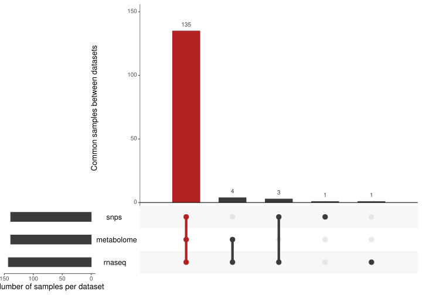
As can be seen in the upset plot above, 135 samples have measurements across all three omics datasets. In addition, 4 samples have both transcriptomics and metabolomics measurements, but no transcriptomics information; 3 samples are present in the genomics and metabolomics datasets but not the transcriptomics dataset, and the genomics and transcriptomics datasets each have a unique sample not present in the other omics datasets.
4.3.2 Datasets density plots
Next, we can show the density plot of each omics dataset with the plot_density_data() function. By default, all datasets are plotted onto the same axes, which is not very useful if they have very different scales. We can change that by setting the combined argument to FALSE, which splits the plot into one facet per dataset, and by setting scales to 'free' in order to give its own scale to each dataset:
plot_density_data(mo_set, combined = FALSE, scales = "free")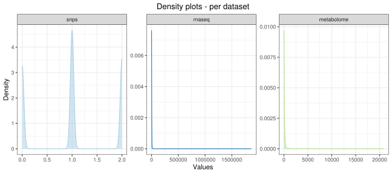
By default, all datasets are represented in the density plot, but it is possible to focus on one or a subset of them via the datasets argument. This is useful here as the plots for the transcriptomics and metabolomics could benefit from a log10 transformation for the x-axis:
plot_density_data(
mo_set,
datasets = c("rnaseq", "metabolome"),
combined = FALSE,
scales = "free"
) +
scale_x_log10()
#> Warning: Transformation introduced infinite values in continuous x-axis
#> Warning: Removed 338138 rows containing non-finite values (`stat_density()`).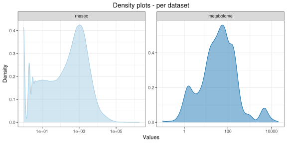
Note that as the plot_density_data() function returns a ggplot, it can be further customised with other ggplot2 functions as shown above.
4.3.3 Datasets mean-sd plots
It is also possible to assess for each dataset whether there exists a relationship between the features mean and standard deviation, with the plot_meansd_data() function. The presence of such relationship indicates that the dataset should be transformed, via a log or variance-stabilising transformation. The function requires the hexbin package to be installed:
plot_meansd_data(mo_set)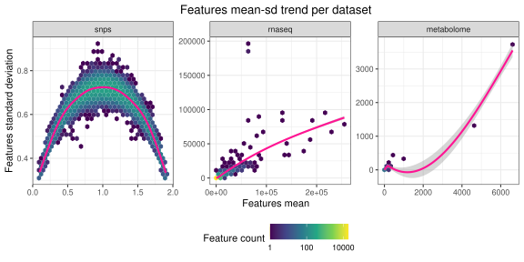
In our case, we can see a very strong relationship between features mean and standard deviation in both the transcriptomics and metabolomics datasets, which suggest that a log or variance-stabilising transformation will be necessary in both cases (datasets transformation are covered in Chapter 6).
Note that the hexplots are only drawn for datasets with at least 30 features, and the trend curve (in pink) is only drawn for datasets with at least 10 features.
4.4 Assessing missing values
Finally, one very important aspect to check is the presence of missing values in the datasets. The function check_missing_values() provide a summary of the number of missing values in each dataset:
check_missing_values(mo_set)
#> 9615 (0.3%) missing values in snps dataset, across 4093 features and 139 samples.
#> No missing values in rnaseq dataset.
#> 588 (7.69%) missing values in metabolome dataset, across 15 features and 45 samples.The function returns an invisible character vector containing the messages printed above, which is useful for automatic reporting.
In Chapter 6, we will see how to impute missing values.
4.5 Visualising the datasets
Once the omics datasets are stored in a MultiDataSet object, we can easily visualise the measurements for a set of features of interest. As an example, we will randomly select three features from each of the omics datasets:
set.seed(32)
random_features <- get_features(mo_set) |>
map(\(x) sample(x, size = 3, replace = FALSE)) |>
unlist() |>
unname()
random_features
#> [1] "ARS-BFGL-NGS-102169_dup" "BovineHD0300020059"
#> [3] "BTB-01546164" "ENSBTAG00000038316"
#> [5] "ENSBTAG00000016902" "ENSBTAG00000048333"
#> [7] "HMDB00214" "HMDB00407"
#> [9] "HMDB00182"4.5.1 As a heatmap
The function plot_data_heatmap() allows us to view the data for these features as a heatmap. It relies on the ComplexHeatmap::Heatmap() function, and can be customised by passing arguments to this function (for example to remove the column labels):
plot_data_heatmap(
mo_set,
random_features,
center = TRUE,
scale = TRUE,
show_column_names = FALSE
)
#> Warning: Not enough data to calculate distance between samples, disabling
#> clustering of columns.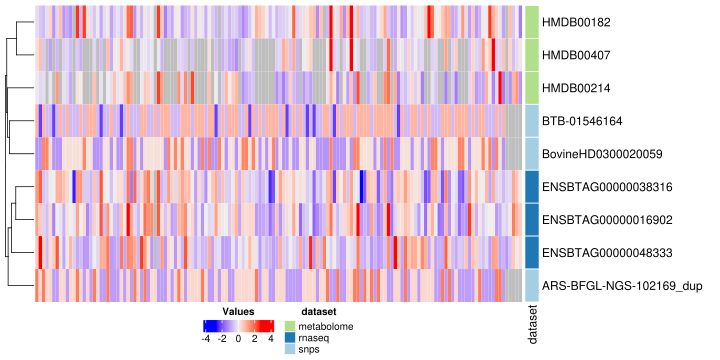
Note that we specified that the data should be centred and scaled before plotting, to represent features from different datasets on a similar scale.
By default, all samples all represented, including those that are only present in some of the omics datasets (hence the warning about columns clustering). We can instead restrict the plot to only samples that are present across all datasets (only_common_samples argument), or to specific samples by passing a list of samples ID to the samples argument:
plot_data_heatmap(
mo_set,
random_features,
center = TRUE,
scale = TRUE,
show_column_names = FALSE,
samples = c("O4713", "Y3660", "R5979")
)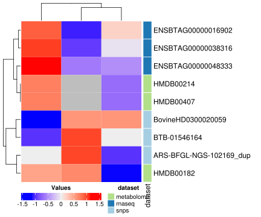
We can also add samples and/or features information to the sides of the heatmap through the samples_info and features_info arguments. These two arguments take a vector of column names from the samples or features metadata table, respectively. The ComplexHeatmap::Heatmap() picks random colours for these annotations, but we can set specific colour palettes by passing a list of colour palettes through the argument colours_list. For continuous annotations, the colour palette must be generated with circlize::colorRamp2().
plot_data_heatmap(
mo_set,
random_features,
center = TRUE,
scale = TRUE,
show_column_names = FALSE,
only_common_samples = TRUE,
samples_info = c("status", "day_on_feed"),
features_info = c("chromosome"),
colours_list = list(
"status" = c("Control" = "gold", "BRD" = "lightblue"),
"day_on_feed" = colorRamp2(c(5, 70), c("white", "pink3"))
)
)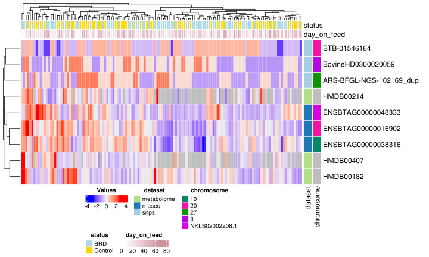
We can also use information from the features metadata tables to give a more meaningful label to the features. For example, we can use the column Name from the transcriptomics features metadata and the column name from the metabolomics features metadata to label the features. This is done by passing a named list through the label_cols argument, where each element is the name of the column to use and the name of the element gives the name of the dataset in the MultiDataSet object. If these labels are too long, we can truncate them through the truncate argument (see the function help).
plot_data_heatmap(
mo_set,
random_features,
center = TRUE,
scale = TRUE,
show_column_names = FALSE,
only_common_samples = TRUE,
samples_info = c("status", "day_on_feed"),
features_info = c("chromosome"),
colours_list = list(
"status" = c("Control" = "gold", "BRD" = "lightblue"),
"day_on_feed" = colorRamp2(c(5, 70), c("white", "pink3"))
),
label_cols = list(
"rnaseq" = "Name",
"metabolome" = "name"
),
truncate = 20
)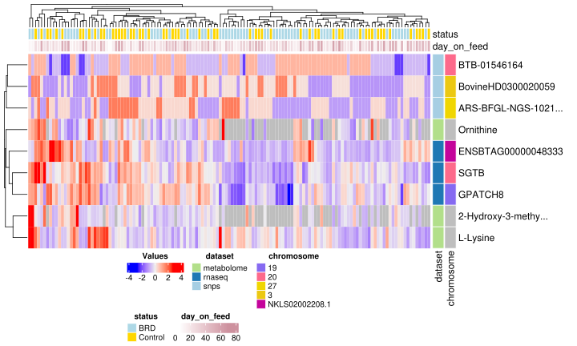
Note that because we didn’t include the snps dataset in the list passed through label_cols, the ID of the features are used as labels.
4.5.2 Against samples covariates
Alternatively, we can display the features’ measurements against some samples covariate, with the plot_data_covariate() function. As for the plot_data_heatmap() function, the plot shows data from all samples, unless otherwise specified (through either the common_samples_only or samples arguments). The covariate is specified as a column name from the samples metadata (can be from any dataset’s samples metadata). If the covariate is categorical, the function generates violin plots. For example, we can represent the feature’s measurements against the animal disease status:
plot_data_covariate(
mo_set,
"status",
random_features,
only_common_samples = TRUE
)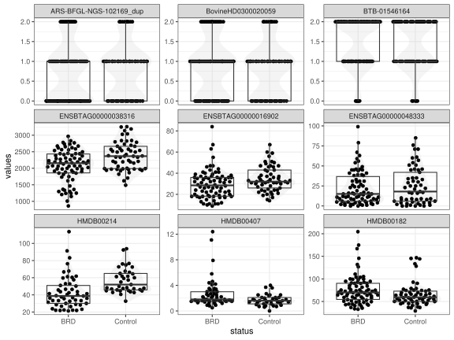
We can use other columns from the samples metadata to customise the points colour and shape. For the colour, the constructed plot will depend on whether the corresponding in categorical or numeric:
plot_data_covariate(
mo_set,
"status",
random_features,
only_common_samples = TRUE,
colour_by = "gender",
shape_by = "feedlot"
)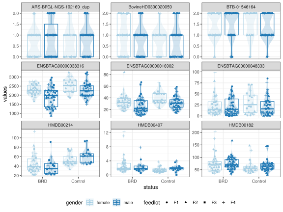
plot_data_covariate(
mo_set,
"status",
random_features,
only_common_samples = TRUE,
colour_by = "day_on_feed",
shape_by = "feedlot"
)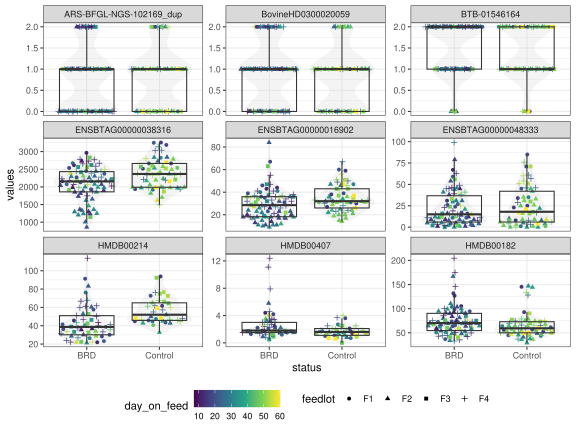
If instead the covariate is numerical, the function produces scatterplots with a loess curve for each feature:
plot_data_covariate(
mo_set,
"day_on_feed",
random_features,
only_common_samples = TRUE
)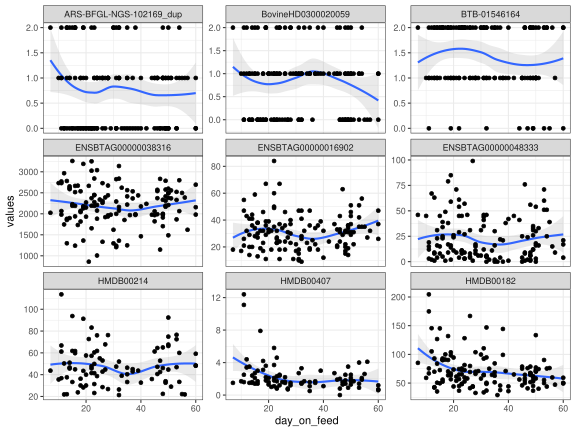
Again, we can use other samples information to specify the colour or shapes of the samples. Note that if the covariate used for points colour is discrete, a loess curve will be fitted for each category. If the covariate is continuous, or if changing the shape of the points, only one loess curve will be fitted for all data points.
plot_data_covariate(
mo_set,
"day_on_feed",
random_features,
only_common_samples = TRUE,
colour_by = "status",
shape_by = "status"
)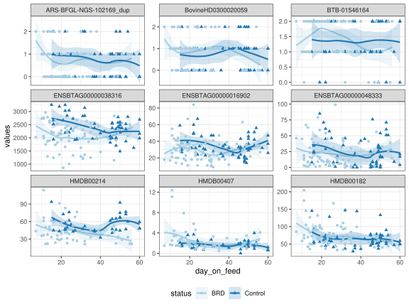
plot_data_covariate(
mo_set,
"day_on_feed",
random_features,
only_common_samples = TRUE,
colour_by = "day_on_feed",
shape_by = "feedlot"
)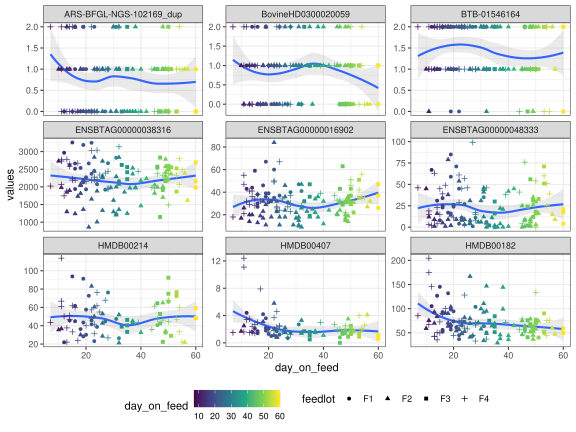
The features can be renamed using features metadata through the label_cols argument in the same way that with the plot_data_heatmap() function:
plot_data_covariate(
mo_set,
"day_on_feed",
random_features,
only_common_samples = TRUE,
label_cols = list(
"rnaseq" = "Name",
"metabolome" = "name"
)
)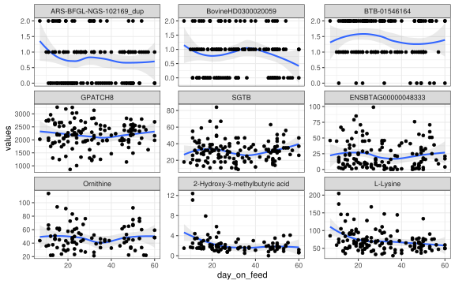
4.6 Recap – targets list
Although we didn’t create any new target in this section, we can turn some plots into targets.
Targets list for inspecting a MultiDataSet object
list(
## Creating a density plot for each dataset
tar_target(
density_plots,
plot_density_data(
mo_set,
combined = FALSE,
scales = "free"
)
),
## Plotting the relationship between features mean and standard deviation
## for each dataset
tar_target(
mean_sd_plots,
plot_meansd_data(mo_set)
),
## Assessing missing values
tar_target(
n_missing_values,
check_missing_values(mo_set)
)
)